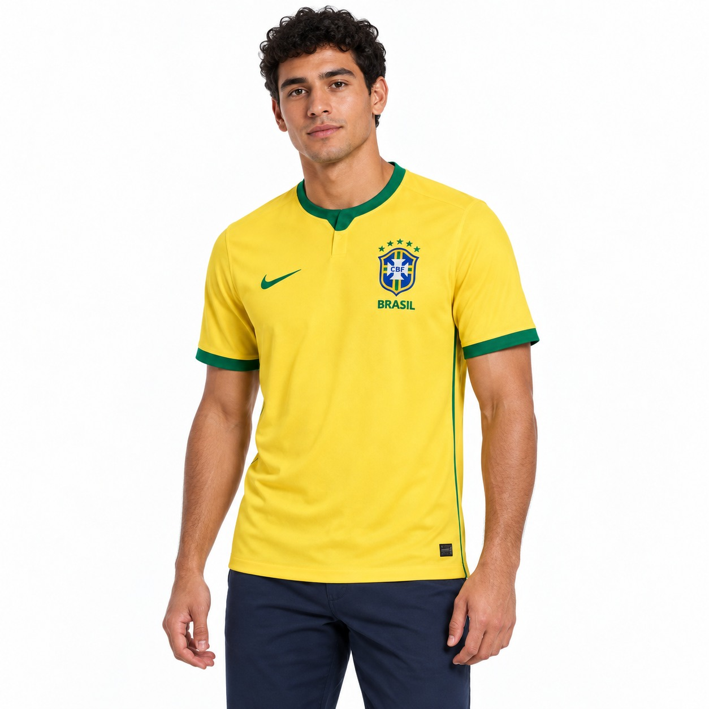
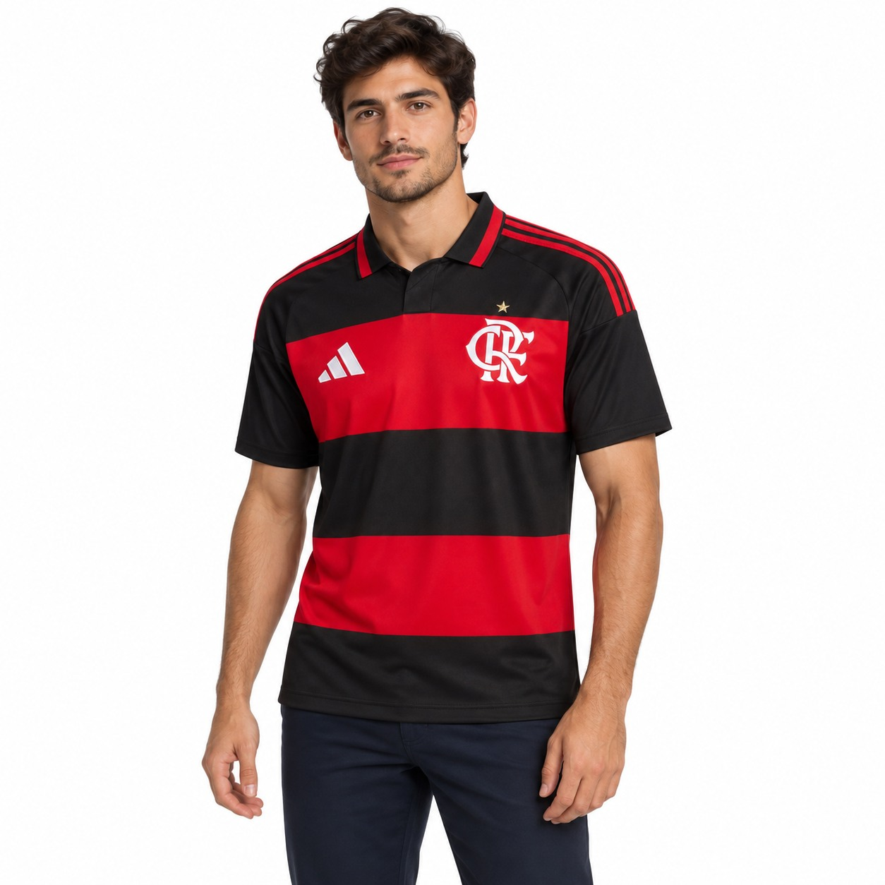
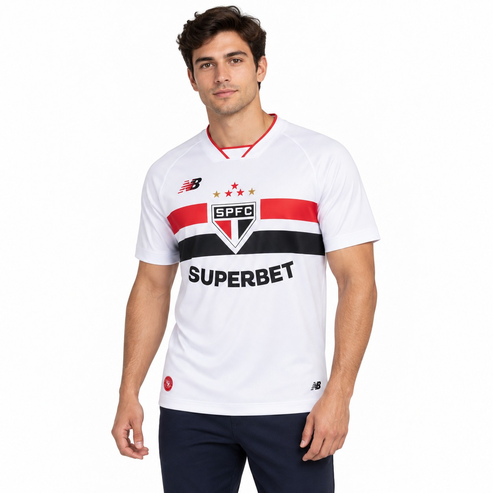
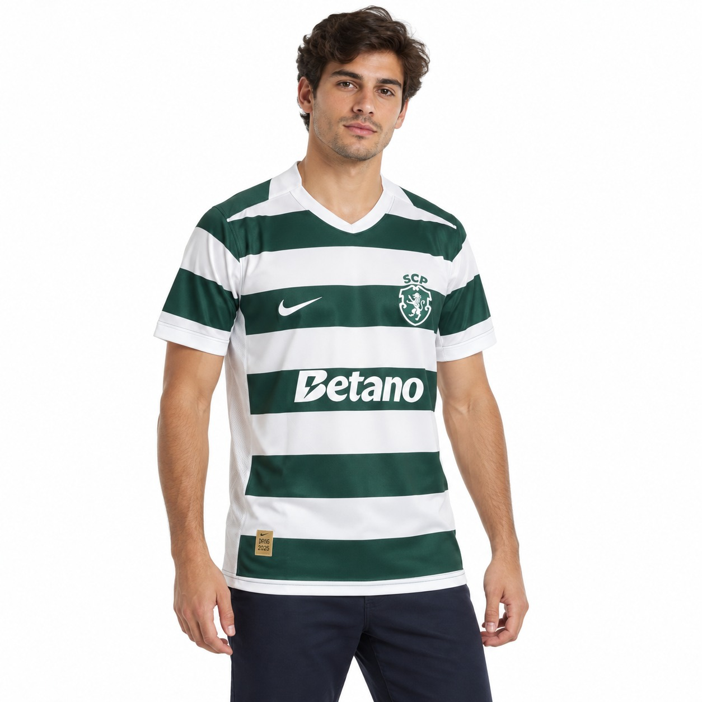
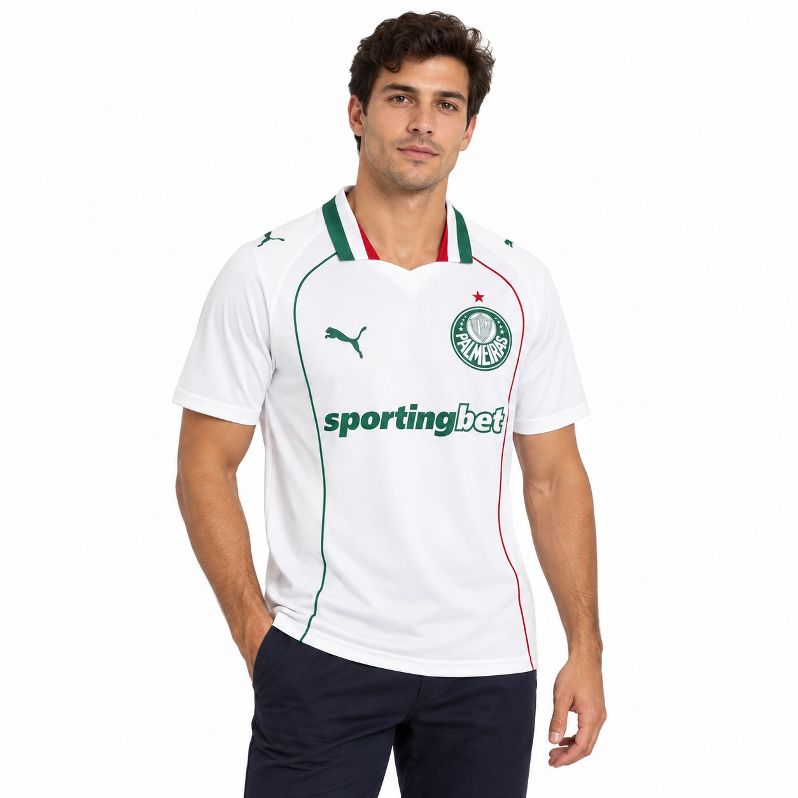

Detalhes de perto
Tecido e emblemas
OFERTA POR TEMPO LIMITADO
ESCOLHA 6
PAGUE APENAS 3
Monte a sua coleção, misture clubes e escolha os seus seis mantos favoritos. As três camisas de menor valor ficam grátis automaticamente.
A PROMOÇÃO TERMINA EM:
Promoção válida de 18 de setembro até 09 de outubro de 2026. Aplicam-se condições. Ver regras da promoção


Opiniões de clientes
Veja novidades, produtos e conteúdos da comunidade no Instagram da Low Wear.
Sem filtros
Tecido, emblemas, acabamento e caimento em movimento.
Deslize para ver mais vídeos no telemóvel.
Seleção Brasileira e seis clubes. Filtre pela sua equipa, tipo, temporada, tamanho, preço ou disponibilidade.
Seleção de Portugal e grandes clubes portugueses — numa coleção à parte do catálogo brasileiro.
Uma amostra do que os nossos clientes mais escolhem — Brasil e Portugal, lado a lado.







Receba lançamentos, reposições e promoções das suas equipas favoritas.
Experimente "Flamengo", "Seleção", "retro"…
Inicie sessão para ver encomendas e favoritos.
Ainda não tem conta?
Junte-se à Low Wear e acompanhe as suas encomendas.
Já tem conta?
Medidas em centímetros. Em caso de dúvida, escolha o tamanho acima.
| Tam. | Peito | Comprimento |
|---|---|---|
| S | 92–97 | 68 |
| M | 98–103 | 70 |
| L | 104–109 | 72 |
| XL | 110–115 | 74 |
Low Wear — Última atualização: 1 de agosto de 2026
A Low Wear respeita a privacidade dos seus clientes e compromete-se a proteger os seus dados pessoais. Esta Política de Privacidade explica quais informações são recolhidas através do nosso site, como são utilizadas, com quem podem ser partilhadas e quais são os direitos dos utilizadores.
Quando utiliza o nosso site ou realiza uma compra, podemos recolher os seguintes dados:
Os pagamentos são processados por prestadores externos de serviços de pagamento. A Low Wear não tem acesso aos dados completos do cartão bancário utilizado pelo cliente.
Os dados pessoais recolhidos podem ser utilizados para:
A Low Wear trata os dados pessoais com base nos seguintes fundamentos:
O consentimento poderá ser retirado a qualquer momento, sem afetar a legalidade do tratamento realizado antes da sua retirada.
A Low Wear poderá partilhar apenas os dados necessários com prestadores que ajudam no funcionamento da loja, incluindo:
A Low Wear não vende nem aluga os dados pessoais dos seus clientes.
Alguns prestadores poderão tratar dados fora do Espaço Económico Europeu. Quando isso acontecer, serão utilizadas as garantias adequadas exigidas pela legislação de proteção de dados.
Os pagamentos realizados no site são processados por plataformas externas e seguras (Stripe).
A Low Wear poderá receber informações como a confirmação do pagamento, o valor, a data da transação e o método utilizado, mas não armazena os dados completos do cartão bancário do cliente.
O tratamento dessas informações também está sujeito às políticas de privacidade e segurança do prestador de pagamento utilizado.
Para realizar a entrega de uma encomenda, poderemos partilhar com a transportadora informações como:
Esses dados serão utilizados apenas na medida necessária para preparar, acompanhar e concluir a entrega.
O site da Low Wear poderá utilizar cookies e tecnologias semelhantes.
Os cookies necessários podem ser utilizados para:
Com autorização do utilizador, também poderão ser utilizados cookies de:
Os cookies opcionais poderão ser recusados ou alterados através do painel de preferências de cookies do site.
A Low Wear poderá enviar novidades, campanhas, descontos e ofertas quando o cliente tiver autorizado o recebimento dessas comunicações ou quando existir outra base legal válida.
O cliente poderá cancelar o recebimento a qualquer momento:
O cancelamento das comunicações promocionais não impede o envio de mensagens essenciais relacionadas com encomendas, pagamentos, entregas, trocas ou devoluções.
Os dados pessoais serão conservados apenas durante o período necessário para cumprir as finalidades descritas nesta política e respeitar as obrigações legais, fiscais, contabilísticas e contratuais aplicáveis.
Os dados relacionados com compras e faturação poderão ser conservados durante os prazos legalmente exigidos.
Os dados utilizados para marketing serão conservados até o cliente retirar o seu consentimento ou solicitar a sua eliminação, salvo quando existir outra obrigação legal que justifique a conservação.
Quando os dados deixarem de ser necessários, serão eliminados ou anonimizados de forma segura.
A Low Wear adota medidas técnicas e organizativas adequadas para proteger os dados pessoais contra:
Apesar das medidas de segurança adotadas, nenhum sistema de transmissão ou armazenamento digital pode garantir segurança absoluta.
Caso ocorra uma violação de dados pessoais, serão tomadas as medidas previstas na legislação aplicável, incluindo a comunicação às autoridades ou aos titulares afetados quando legalmente exigido.
Nos termos da legislação aplicável, o titular dos dados poderá solicitar:
Para exercer qualquer um desses direitos, envie um pedido para Lowwear@gmail.com.
Poderemos solicitar informações adicionais apenas quando forem necessárias para confirmar a identidade da pessoa que realizou o pedido.
O titular também poderá apresentar uma reclamação à Comissão Nacional de Proteção de Dados — CNPD, através do site www.cnpd.pt.
A Low Wear não procura recolher intencionalmente dados pessoais de menores sem a autorização necessária dos seus pais ou responsáveis legais.
Quando uma compra for realizada por um menor que não tenha capacidade legal para celebrar o contrato, deverá existir autorização do respetivo responsável legal.
Caso sejam identificados dados de menores recolhidos de forma inadequada, serão tomadas medidas para os eliminar.
O site poderá conter ligações para páginas, redes sociais ou serviços pertencentes a terceiros.
A Low Wear não controla nem é responsável pelas políticas de privacidade, conteúdos ou práticas desses serviços. Recomendamos que o utilizador consulte as respetivas políticas antes de fornecer dados pessoais.
A Low Wear não utiliza os dados pessoais dos clientes para tomar decisões exclusivamente automatizadas que produzam efeitos jurídicos ou afetem significativamente os utilizadores.
Caso essa prática seja implementada no futuro, esta política será atualizada e os utilizadores serão devidamente informados.
Esta Política de Privacidade poderá ser atualizada para refletir mudanças:
A versão mais recente estará sempre disponível nesta página, acompanhada da respetiva data de atualização.
Nas compras online, pode comunicar a livre resolução no prazo de 14 dias seguidos após a receção, sem necessidade de indicar um motivo.
Antes de enviar o produto, entre em contacto connosco e indique o número da encomenda. A peça pode ser manuseada apenas na medida necessária para verificar a natureza, as características e o tamanho, e deve ser devolvida devidamente protegida. Os custos diretos da devolução por desistência ficam a cargo do cliente.
O direito de livre resolução pode não se aplicar a artigos claramente personalizados, como camisas produzidas com nome ou número escolhido pelo cliente. Esta exceção não limita os direitos legais quando o artigo estiver errado, danificado, defeituoso ou não corresponder ao pedido.
O prazo aparece no momento da compra e pode variar de acordo com a sua localização. Assim que o pedido for enviado, você receberá o código de rastreamento para acompanhar tudo.
Quando a camisa for enviada, mandaremos o código de rastreamento para o contacto informado na compra. Você também poderá acompanhar pelo site.
Na página de cada camisa você encontrará o nosso guia de medidas. A melhor forma de escolher é comparar as medidas com uma camisa que já fique bem em você.
Tudo bem, isso acontece. Entre em contacto connosco dentro do prazo de troca informado no site. A camisa precisa estar sem sinais de uso ou lavagem e com as etiquetas originais.
Sim. Nas compras online, pode comunicar a devolução no prazo de 14 dias seguidos após receber a encomenda. A exceção pode aplicar-se a peças claramente personalizadas, sem limitar os seus direitos em caso de defeito, dano ou produto incorreto.
Fale connosco assim que perceber o problema e envie uma fotografia da camisa junto com o número do pedido. Vamos analisar o caso e ajudar a resolver o mais rápido possível.
As formas de pagamento disponíveis aparecem no checkout. Antes de finalizar, você poderá conferir todas as opções e escolher a mais conveniente.
Sim. Os pagamentos são processados por plataformas seguras, e os dados bancários não ficam armazenados diretamente pela Low Wear.
Se o pedido ainda não tiver sido enviado, entre em contacto connosco o mais rápido possível. Depois do envio, será necessário seguir o processo normal de devolução.
Fazemos o possível para mostrar as cores e os detalhes com fidelidade. Mesmo assim, pode existir uma pequena diferença por causa da iluminação da fotografia ou das configurações da tela do seu dispositivo.
Recomendamos lavar à mão ou no ciclo delicado, com água fria e sabão neutro. Não use lixívia, não coloque na máquina de secar e evite passar o ferro diretamente sobre escudos, nomes e estampas.
Pode, sim. Algumas camisas recebem reposição, mas não conseguimos garantir uma data. Quando houver a opção, você poderá pedir para ser avisado assim que ela voltar.
A Low Wear trabalha com uma seleção especial de camisas do Brasil (Seleção, Flamengo, Corinthians, São Paulo, Palmeiras, Santos e Cruzeiro) e agora também de Portugal. O catálogo pode receber novidades ao longo do tempo.
Pode mandar a sua sugestão pelo WhatsApp. Não conseguimos garantir que ela entrará no catálogo, mas usamos os pedidos dos clientes para decidir quais camisas serão adicionadas.
Claro. Basta informar o endereço da pessoa no momento da compra. Antes de pagar, confira com atenção o tamanho escolhido e os dados de entrega.
Dependendo do momento em que foram feitos e da preparação dos pedidos, eles poderão ser enviados juntos ou separadamente. Se precisar de ajuda, fale connosco e informe os dois números dos pedidos.
Confira primeiro a pasta de spam ou lixo eletrónico. Se a mensagem não estiver lá, fale connosco e envie o nome utilizado na compra para verificarmos o pedido.
Selecione seis modelos participantes. Você pode misturar clubes, cores e coleções.
Acompanhe o contador até completar as seis camisas.
As três camisas de menor valor ficam gratuitas automaticamente no checkout.
Promoção válida de 18 de setembro até 09 de outubro de 2026. Na compra de seis camisas participantes, as três de menor valor ficam grátis. Limitada a uma aplicação por encomenda. Personalização não incluída. Portes standard gratuitos para os destinos aceites no checkout. Não acumulável com outros descontos. Sujeita à disponibilidade dos produtos.
Low Wear — Última atualização: 19 de setembro de 2026
Os presentes Termos e Condições regulam a utilização do site da Low Wear e a compra dos produtos nele disponíveis.
Ao utilizar o site ou realizar uma encomenda, o cliente declara que leu e aceita estes Termos e Condições. Recomendamos a sua leitura antes de concluir qualquer compra.
A Low Wear é uma loja online gerida por uma pessoa singular.
Nome da loja: Low Wear
Estes Termos e Condições aplicam-se:
As condições específicas apresentadas na página de cada produto, no carrinho ou durante o pagamento também fazem parte do contrato de compra.
O utilizador compromete-se a utilizar o site de forma responsável e de acordo com a legislação aplicável.
Não é permitido:
A Low Wear poderá limitar ou bloquear o acesso ao site quando existirem indícios de fraude, abuso ou utilização ilegal.
A Low Wear procura apresentar informações completas e corretas sobre os produtos, incluindo fotografias, tamanhos, cores preços e disponibilidade.
As cores apresentadas no ecrã poderão variar ligeiramente devido às configurações do dispositivo, iluminação das fotografias ou processo de produção.
O cliente deve consultar cuidadosamente:
A Low Wear não se responsabiliza pela escolha incorreta do tamanho quando o produto recebido corresponde ao tamanho selecionado e às medidas apresentadas no site. Esta regra não elimina o direito legal de livre resolução aplicável às compras à distância.
Todos os produtos estão sujeitos à disponibilidade de stock.
A colocação de um produto no carrinho não garante a sua reserva. A reserva apenas ocorre após a confirmação da encomenda e do respetivo pagamento, quando aplicável.
Se um produto ficar indisponível depois da encomenda, a Low Wear informará o cliente e apresentará, quando possível, uma das seguintes opções:
A substituição por outro produto só será realizada com a autorização do cliente.
Os preços são apresentados em euros (€) e incluem os impostos legalmente aplicáveis, salvo indicação clara em contrário.
Os portes da modalidade standard são gratuitos para os destinos aceites no checkout. Qualquer modalidade adicional com custo, caso venha a ser disponibilizada, será apresentada antes da conclusão da compra.
A Low Wear poderá alterar os preços a qualquer momento. Essas alterações não afetam encomendas já confirmadas, exceto quando existir um erro evidente.
Promoções e códigos de desconto:
Se existir um erro evidente no preço, descrição ou disponibilidade de um produto, a Low Wear poderá contactar o cliente antes do envio para corrigir a situação.
O cliente poderá:
A Low Wear não enviará um produto por um preço manifestamente incorreto quando o erro pudesse ser razoavelmente reconhecido pelo cliente.
Para realizar uma compra, o cliente deverá:
Antes da confirmação, o cliente poderá identificar e corrigir eventuais erros.
A Low Wear poderá contactar o cliente para confirmar informações da encomenda quando existirem dados incompletos, inconsistências ou suspeitas de fraude.
Os métodos de pagamento aceites são:
Os pagamentos poderão ser processados por plataformas externas (Stripe). A Low Wear não tem acesso aos dados completos do cartão bancário do cliente.
A encomenda poderá ficar pendente até à confirmação do pagamento.
Se o pagamento for recusado, cancelado ou não confirmado dentro do prazo apresentado, a encomenda poderá ser automaticamente cancelada.
A Low Wear realiza entregas para:
Zonas de entrega: Portugal Continental, Madeira, Açores, União Europeia e outros países.
Prazo estimado de preparação: 5 dias úteis
Prazo estimado de transporte: 9 dias úteis
Os prazos apresentados são estimativas, salvo quando uma data de entrega tenha sido expressamente acordada como essencial.
Na ausência de um prazo especificamente acordado, a entrega será efetuada sem demora injustificada e dentro do prazo legal aplicável.
O cliente é responsável por fornecer:
Se a encomenda não puder ser entregue devido a uma morada incorreta, ausência repetida do destinatário ou falta de levantamento, poderão ser cobrados os custos de um novo envio, desde que o problema seja imputável ao cliente.
Se a embalagem apresentar sinais graves de dano no momento da entrega, o cliente deverá, sempre que possível, registar a situação junto da transportadora e fotografar a embalagem antes de a abrir.
Podem ocorrer atrasos devido a fatores externos, incluindo condições meteorológicas, greves, períodos de elevada procura, procedimentos alfandegários ou problemas da transportadora.
Caso a encomenda não chegue dentro do prazo indicado, o cliente deverá contactar a Low Wear.
Se a entrega não ocorrer no prazo acordado ou legalmente aplicável, o cliente poderá solicitar a entrega dentro de um prazo adicional adequado.
Se a entrega continuar sem ser efetuada, o cliente poderá resolver o contrato e receber o reembolso dos valores pagos, nos termos da legislação aplicável.
O risco de perda ou dano transfere-se para o cliente quando este, ou uma pessoa por ele indicada, recebe fisicamente a encomenda.
Nas compras realizadas online, o consumidor dispõe, em regra, de 14 dias seguidos para exercer o direito de livre resolução sem precisar de indicar um motivo.
O prazo começa no dia seguinte àquele em que o consumidor, ou uma pessoa por ele indicada, recebe fisicamente o produto.
Para exercer este direito, o cliente deverá comunicar claramente a sua decisão através dos contactos indicados na secção 35.
A comunicação deverá identificar:
O cliente também poderá utilizar o formulário disponível no final destes Termos.
Depois de comunicar a desistência, o cliente deverá devolver o produto no prazo legal aplicável, devidamente protegido e, sempre que possível, na embalagem original.
O cliente pode manusear o produto apenas na medida necessária para verificar a sua natureza, características, tamanho e funcionamento, tal como faria numa loja física.
O cliente poderá ser responsabilizado pela diminuição do valor do produto quando o tenha utilizado ou manuseado além do necessário.
Recomenda-se que o artigo seja devolvido:
Quando a devolução ocorrer por simples desistência, os custos diretos do envio do produto para a Low Wear ficam a cargo do cliente, desde que esta informação tenha sido disponibilizada antes da compra.
Quando a devolução ocorrer devido a produto errado, danificado ou não conforme, os custos necessários da devolução ficam a cargo da Low Wear.
Não deverão ser enviados produtos à cobrança sem autorização prévia.
O cliente deve guardar o comprovativo de envio até à conclusão do processo.
Em caso de livre resolução, a Low Wear reembolsará os pagamentos recebidos relativos aos produtos devolvidos e, quando legalmente aplicável, o custo da modalidade normal de entrega.
Custos adicionais resultantes da escolha de uma modalidade de entrega mais cara do que a modalidade normal disponibilizada pela loja não serão reembolsados.
O reembolso será realizado através do mesmo método utilizado no pagamento inicial, salvo acordo expresso em contrário e sem custos adicionais para o cliente.
A Low Wear poderá reter o reembolso até receber o produto ou até o cliente apresentar prova do respetivo envio, consoante o que acontecer primeiro.
O reembolso deverá ser efetuado dentro do prazo legal aplicável, sem prejuízo da possibilidade de retenção referida acima.
O direito de livre resolução poderá não ser aplicável a artigos produzidos de acordo com especificações do cliente ou claramente personalizados, nomeadamente camisas com:
Esta exceção apenas se aplica quando o artigo tenha sido realmente produzido ou modificado segundo as escolhas pessoais do cliente.
A exclusão do direito de desistência não retira os direitos do cliente quando o produto personalizado estiver danificado, apresentar defeito, não corresponder ao pedido ou estiver em falta de conformidade.
Se receber um produto diferente do encomendado, danificado ou com defeito aparente, o cliente deverá contactar a Low Wear.
Recomenda-se o envio de:
Esta recomendação facilita a resolução do problema, mas não limita os direitos legais do consumidor.
Os produtos vendidos beneficiam da garantia legal prevista na legislação portuguesa.
Para bens móveis novos, a Low Wear é responsável pelas faltas de conformidade que se manifestem no prazo legal de três anos após a entrega.
Consoante as circunstâncias previstas na lei, o consumidor poderá ter direito a:
Se a falta de conformidade se manifestar nos primeiros 30 dias após a entrega, o consumidor poderá solicitar a substituição imediata do produto ou a resolução do contrato, nos termos legais.
A garantia não cobre problemas provocados exclusivamente por:
Estas exclusões apenas se aplicam quando o problema resultar efetivamente dessas situações.
Para preservar as camisas, o cliente deverá respeitar as instruções indicadas na etiqueta ou na página do produto.
De forma geral, recomenda-se:
O cliente poderá solicitar o cancelamento da encomenda antes do envio através dos contactos indicados na secção 35.
O cancelamento será possível se a encomenda ainda não tiver sido enviada ou se a preparação de um produto personalizado ainda não tiver começado.
Se a encomenda já tiver sido enviada, serão aplicadas as regras do direito de livre resolução.
Quando o site permitir a criação de conta, o cliente será responsável por:
A criação de conta não é permitida através de identidade falsa ou em nome de terceiros sem autorização.
As compras devem ser realizadas por pessoas com capacidade legal para celebrar contratos.
A Low Wear poderá cancelar uma encomenda quando existirem motivos razoáveis para acreditar que foi realizada por um menor sem a autorização necessária.
Os textos, fotografias próprias, elementos gráficos, design, logótipo e demais conteúdos criados para a Low Wear estão protegidos pela legislação aplicável.
Não é permitida a sua reprodução, distribuição, alteração ou exploração comercial sem autorização.
As marcas, escudos, nomes de clubes, seleções, fabricantes e patrocinadores apresentados nos produtos pertencem aos respetivos titulares. A sua presença no site não significa necessariamente uma parceria ou relação oficial com a Low Wear, salvo quando isso for expressamente indicado e verdadeiro.
O site poderá utilizar ou apresentar ligações para serviços externos, incluindo plataformas de pagamento, transportadoras e redes sociais.
Esses serviços possuem termos e políticas próprios. A Low Wear não controla o funcionamento de páginas externas, mas continua responsável pelas obrigações que legalmente lhe sejam atribuídas perante o consumidor.
A Low Wear procura manter o site disponível e seguro, mas poderão ocorrer interrupções temporárias devido a:
Sempre que possível, serão tomadas medidas para restabelecer o funcionamento do site.
A Low Wear não será responsável por danos resultantes de utilização indevida do site ou dos produtos, nem por acontecimentos fora do seu controlo razoável.
Nenhuma disposição destes Termos exclui ou limita:
O tratamento dos dados pessoais encontra-se descrito na Política de Privacidade da Low Wear.
O site poderá também utilizar cookies, conforme explicado na respetiva Política de Cookies e no painel de preferências disponível.
O cliente poderá apresentar uma reclamação através dos contactos indicados na secção 35.
A Low Wear procurará responder dentro de um prazo razoável.
O consumidor também poderá utilizar o Livro de Reclamações Eletrónico, disponível em: www.livroreclamacoes.pt
Em caso de litígio de consumo, o consumidor poderá recorrer a uma entidade de Resolução Alternativa de Litígios de Consumo competente.
A lista atualizada das entidades reconhecidas poderá ser consultada no Portal do Consumidor: www.consumidor.gov.pt
O recurso a uma entidade de resolução alternativa não impede o consumidor de recorrer aos tribunais competentes.
A Low Wear poderá atualizar estes Termos para refletir alterações:
As alterações não prejudicam direitos adquiridos em encomendas anteriormente confirmadas.
A versão aplicável a cada compra será aquela que estiver publicada no momento da confirmação da encomenda.
Se alguma disposição destes Termos for considerada inválida ou inaplicável, as restantes disposições continuarão em vigor na medida permitida por lei.
Estes Termos são regulados pela legislação portuguesa.
Qualquer escolha de tribunal ou legislação não poderá retirar ao consumidor a proteção obrigatória que lhe seja concedida pela legislação aplicável.
Para qualquer questão relacionada com estes Termos e Condições, encomendas, entregas ou devoluções, contacte:
Low Wear
E-mail: Lowwear@gmail.com
Preencha e envie este formulário apenas se pretender desistir do contrato, para o e-mail indicado na secção 35, identificando: